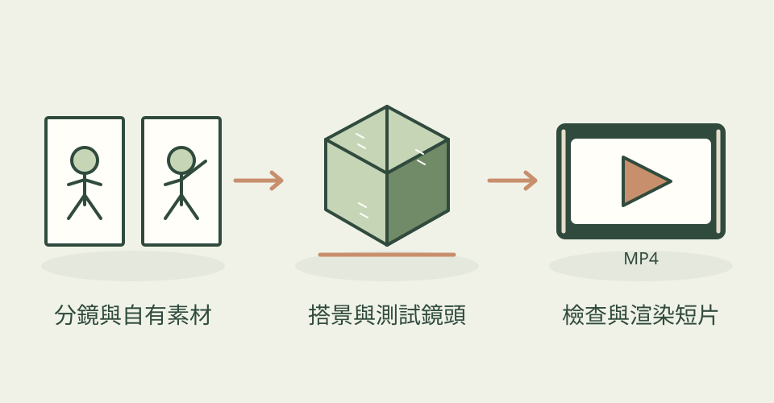

如果想拍一段無人機掠過濕亮街道的夜景，或老車在雪夜回家的短片，這個合集把作者製作影片的步驟與腳本公開。AI 主要負責場景程式、攝影機、物理動作與渲染設定；細緻模型和聲音仍來自你有權使用的素材。
它怎麼幫忙
blender-film 做十秒夜城飛行，包含物理路徑、實景燈光、依距離與速度變化的聲音，以及白模搭建揭幕；blender-forest 從長篇教學整理計畫，逐步搭森林、散布植被與自製車輛控制；blender-car-film 做約二十秒、六鏡頭的雪夜故事。每階段先看小圖，確認後才做可續接的背景 PNG 序列渲染。
三步驟看懂這個技能

由分鏡逐步搭建寫實 Blender 場景，先看測試圖再輸出序列；本站功能示意，非作者成果。
功能示意・本站繪製 放大查看可以這樣開口
這是一個可依需求修改的委託範例。
做一支二十秒自有玩具車形象短片：從有路燈的雪路駛過工作室，停在門口，最後亮起招牌。先交六鏡頭分鏡，再用自有車模與 CC0 環境搭景；此為本站需求範例，未實際渲染。
適合什麼工作
適合已有 Blender 基礎、願意準備合法素材與逐步檢查畫面的動畫師、遊戲美術和影片創作者。
開始之前
- 準備工具
- README 概述 Blender 4.4+，夜城 Skill 同此；森林及汽車 Skill 明列 Blender 5.x，作者皆用 5.2。另需 Claude／可執行 Python 的助手、Python 3、FFmpeg；夜城物理與聲音另用 NumPy、SciPy。Cycles 需合適 GPU，部分輔助腳本是 Windows PowerShell。作者以本機 bridge 連接 Blender；本站未安裝或測試跨助手相容性。
- 使用成本
- 程式與隨附文件 MIT，Blender 免費；AI 使用額度、顯卡與渲染時間另計。模型須自備或選 CC0，音效可用 CC0 錄音，也有可選 ElevenLabs 付費路線；分鏡生圖依所選工具計費。作者 RTX 5070 12GB 的約一至三個多小時案例不能視為你的時間保證。
- 交付內容
- Blender 場景與 Python 腳本、分鏡／測試圖、PNG 序列及編碼影片；夜城流程另含聲音與白模揭幕。
- 先留意
- 2026-11-20 首次收錄，儲存庫建立於 2026-10-25，不是今天發布；本次精確 146 星，屬小眾候選。腳本含原場景名稱，需改寫；示範素材未隨庫附送。作者提及的 Spider-Man 是非商業同人，不代表可商用 Marvel 角色。本文採夜城無人機原圖，非本站實測；程式 MIT 不會移轉第三方模型、教學或角色權利。
作者與來源
本文依作者公開說明整理，沒有實際執行這個專案。功能插圖由本站繪製，原作者範例另行標示；並非本站執行技能的測試結果。GitHub 星數為專案總量，觀察時間為 2026年11月25日 08:30（台北時間）。
與前次快照相比增加 5 星；這不是 GitHub Trending 排名。